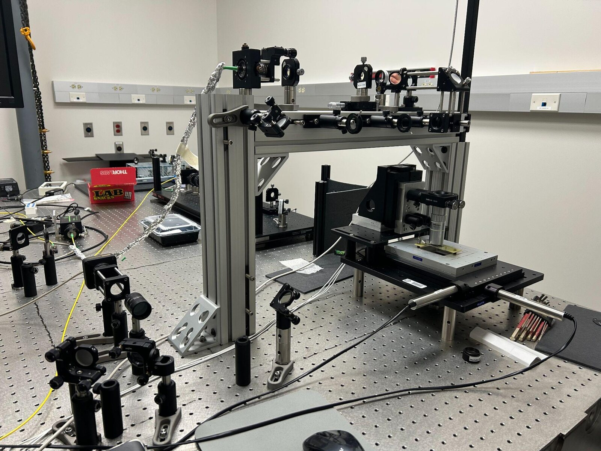
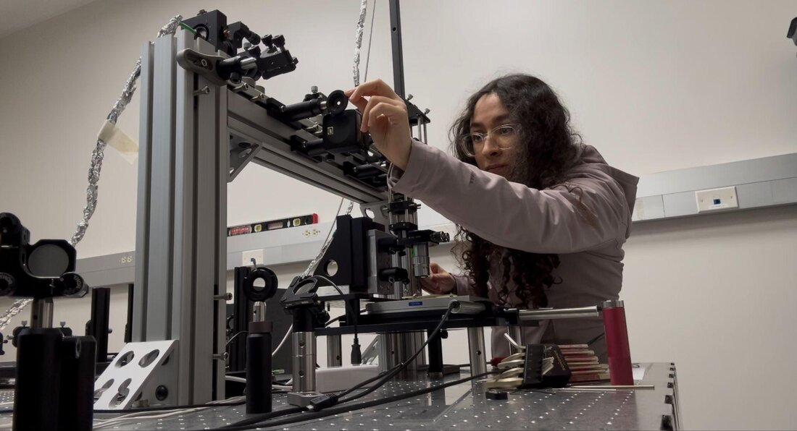
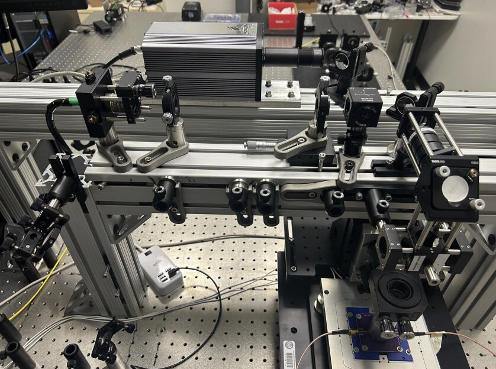
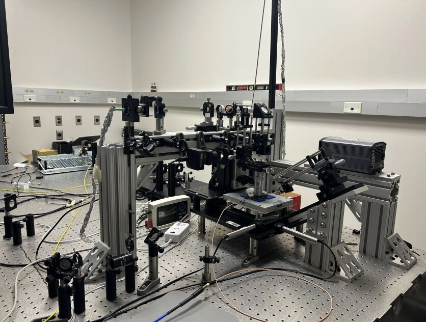
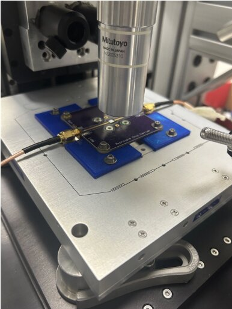
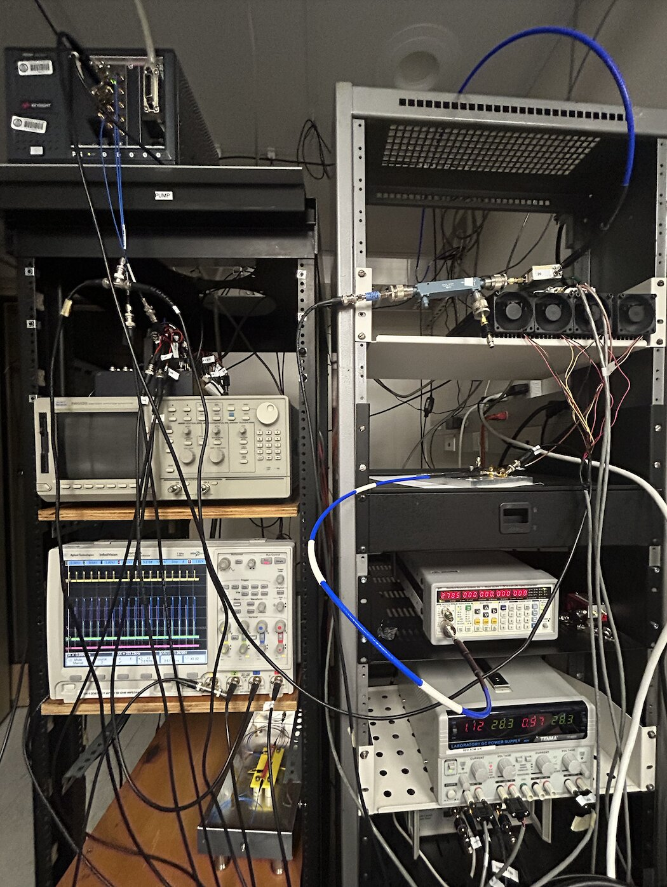
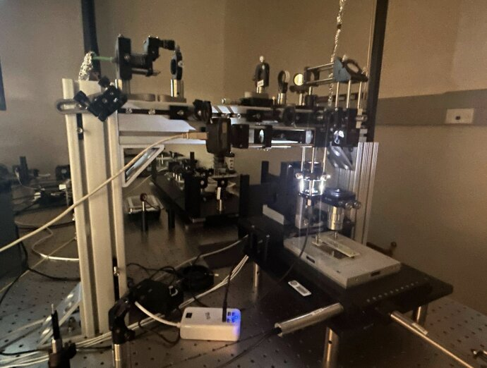

Single NV Quantum Sensing Experimental Setup
2024 – present
Single NV Quantum Sensing Experimental Setup
Single NV Quantum Sensing — Green, Red, IR, and Orange laser excitation, microwave delivery, and single-photon detection, arranged for confocal imaging and ODMR of NV centers in diamond.






